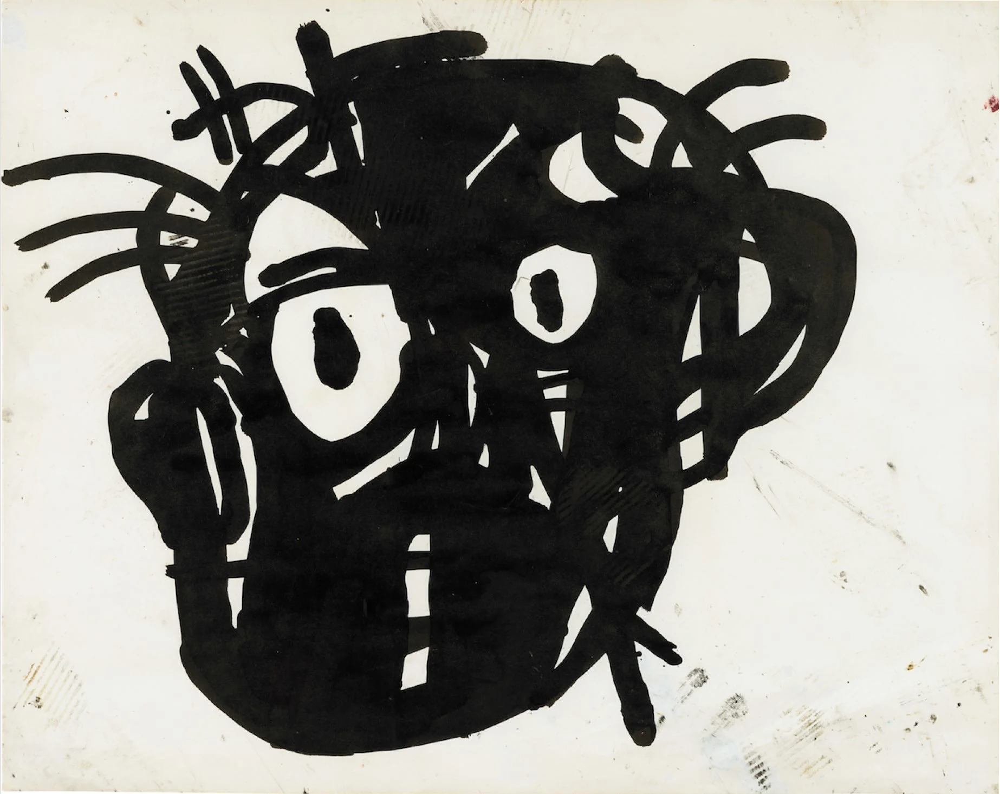

A face made of instinct, the truth drawn before words exist,
emerging from the quiet dark where imagination and prophecy share the same breath,
occupying that narrow space where perception feels intentional but cannot be conclusively
traced, operating almost like a residual signal of cognition. It suggests a framework of
meaning that appears structured yet resists verification, as if the image is not offering clarity
but quietly indicating that understanding might originate in regions of the mind that
remain fundamentally inaccessible. In this form, the work behaves less like a depiction and
more like a fragment of an ongoing internal process that reveals itself only briefly before
withdrawing back into ambiguity.